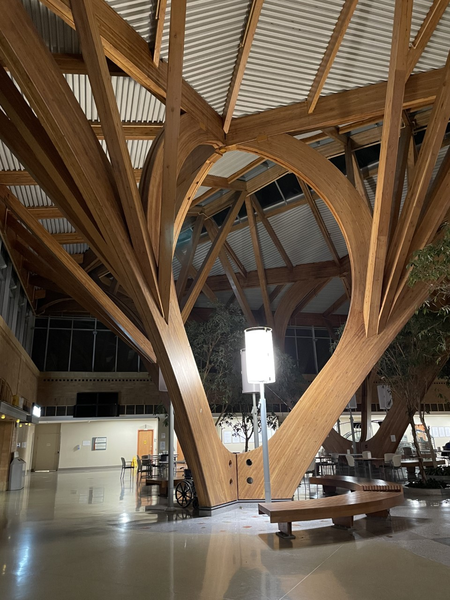
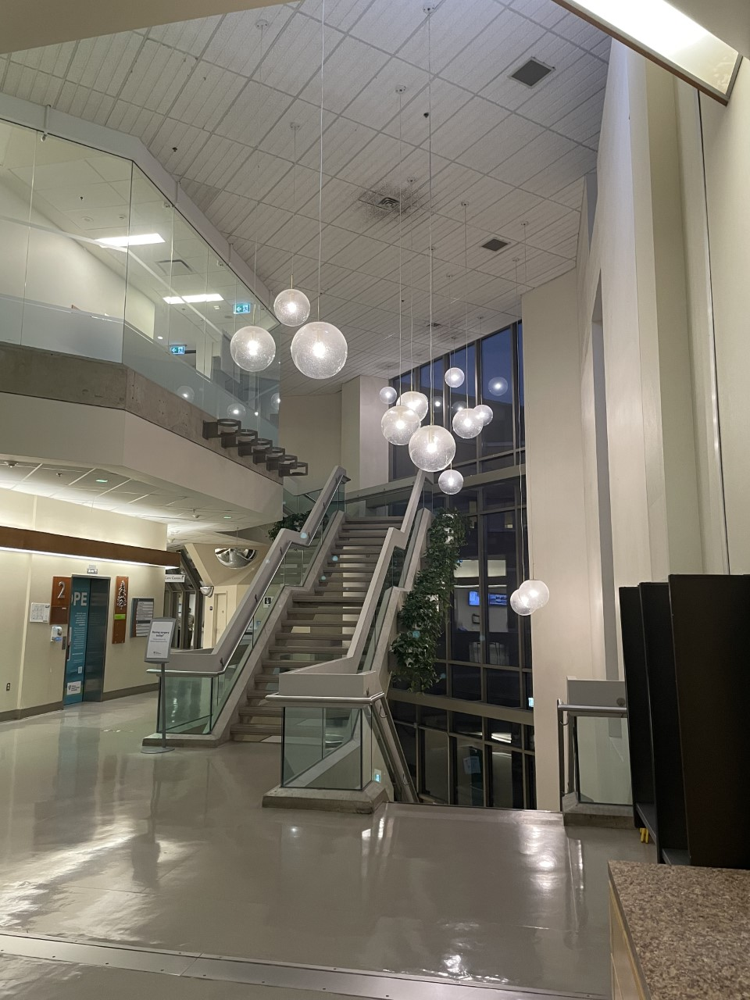

Frequently Asked Questions
General Information
Yes. Your family doctor (or other specialist) needs to fax a referral to our office including your name, demographics, the reason for the referral and all pertinent test results.
Yes. If it has been more than one year since you were last seen, or if you need to be seen for something new or a different condition, you must be re-referred with up-to-date test results if applicable.
Please note that it will take a minimum of two weeks (and sometimes longer) to hear back regarding an appointment. If you have waited more than two weeks, please contact one of our receptionists (see contact info).
Call the office at 905-820-3633 extension 5 and leave a message stating your name, appointment date and if you are confirming or cancelling. If you need to re-schedule, please contact one of our receptionists (see contact info).
All forms should be dropped off at the surgeon's office at 2155 Dunwin Drive for completion. DO NOT bring forms to hospital with you on the day of your surgery. If you require a letter regarding your absence, please call our office (see contact info) and let us know what you require. This is not covered by OHIP and there will be a charge for this service. Our staff will call you when completed forms are ready for pick-up. Payment is due at the time of pick-up (cash only as we do not have a debit/credit machine and we do not accept e-transfers or payment at a later date). Please note that if you have not heard back from our office, your forms are not ready. The forms are usually completed by your surgeon AFTER your surgery has taken place.
Test Results and Follow-Up
All diagnostic imaging tests ordered by our office take place at Credit Valley Hospital. Hospital personnel will call you with the appointment information once your test has been booked. Please do not call our office regarding the scheduling of your appointment. The hospital staff will contact you directly. If, however, it has been more than 6 weeks since we ordered it, you may call us to follow-up on your behalf.
Please call our office ONCE YOU HAVE BEEN GIVEN THE DATE FOR YOUR TEST (even if it is several months away), so that our staff can provide you with a follow-up appointment to discuss the results (see contact info).
Surgery
Due to a shortage of operating room resources, you will be placed on a waiting list for surgery by our office. Our office will contact you once we have a definite date for your surgery. There is no need for you to call regarding this date, as we do our best to accommodate everyone in a timely fashion. Urgent cancer surgeries are always given top priority. On occasion your surgery date may be delayed to accommodate a patient with cancer.
Please see preparation instructions.
Our office staff will contact you 7 to 10 days prior to your surgery to give you this information. We are not able to provide this any sooner, as sometimes the order in which surgeries are booked has to be adjusted. Please ONLY go by the time that you are given by this office, as we are the only people aware of any changes in timing.
No, our staff have ordered the appropriate pre-op tests as requested by your surgeon. Hospital staff will reach out to you directly regarding these appointment(s). Sometimes this is only a few days before your surgery. Please be patient…. You will be called in this regard.
Please see the attachments under preparation instructions.
Please refer to the post-operative instructions on the surgery page for your respective procedure.
If Home Care nursing services are required, this will be ordered by your surgeon when you are discharged home and the Home Care nurse will reach out to you directly to set up a visit. Please note that services for housekeeping, groceries, laundry, etc. are not an OHIP benefit. If you feel that you require these services, you or your family member will need to make the necessary arrangements.
Every situation is different. Please make sure to clarify this with your surgeon at the time of your consultation appointment.
Please note that we require a minimum of 14 days notice to cancel or rebook your surgery. If this is the case, please speak to one of our receptionists (see contact info). Operating room time is a valuable and limited resource. Last minute cancellations result in wasted operating room time which could have been used for another patient. Failure to provide the minimum notice will be subject to a late cancellation fee which will need to be paid before we can rebook your appointment.
Your surgical follow-up appointment will take place in the Ambulatory Care Clinic at The Credit Valley Hospital. Usually this will take place 6 – 8 weeks post-surgery. This is ordered by your surgeon at the time of discharge. A staff member from the hospital clinic will call and/or mail you the appointment information. This may take a few days. Please note that each surgeon only has one half day clinic every week so there is little flexibility to re-schedule these appointments.
Endoscopy Clinic
All endoscopic appointments take place in the Endoscopy Clinic (1st floor, room 1G-601) at The Credit Valley Hospital.
Yes. Please see the preparation instructions on the endoscopy page for your specific procedure.
If you are having a procedure requiring sedation or if you are having hemorrhoid banding, you will need a ride home with a responsible adult. If you are planning on using a taxi/ride share service, you still need someone to accompany you. If the person dropping you off does not stay at the hospital, they will be contacted by endoscopy staff when you are ready for discharge and pick up.
Please see the preparation instructions on the endoscopy page for your specific procedure.
Please note that we require a minimum of 10 days notice to cancel or rebook your procedure. If this is the case, please speak to one of our receptionists (see contact info). Failure to provide the minimum notice will be subject to a late cancellation fee which will need to be paid before we can rebook your appointment.
When you are discharged home from The Endoscopy Clinic at The Credit Valley Hospital, you will be given instructions regarding a follow-up. In some cases, you will be told you can follow-up with your family doctor. If you were told you need to see the surgeon, please call our office (if we have not yet called you) to schedule an appointment 4 to 6 weeks after the procedure. See contact info.
Have more questions?
Our staff are happy to help. Please refer to our contact info if you wish to speak to or e-mail one of our staff members.

